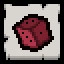
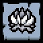
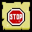
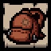
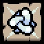
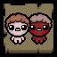
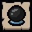
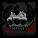

Achievements
Achievements are unlocked after completing Challenges, reaching certain milestones, achieving hidden goals, or unlocking certain items. In the PC version, every Steam achievement exactly corresponds to one secret in-game, whereas only a handful of secrets are represented by PSN trophies in the PlayStation version of the game.
If Isaac is unable to unlock achievements, a small icon of a crossed-out trophy Disables achievements will be displayed below the Key's counter. Conditions which can disable the ability to unlock achievements include:
- Using a pre-determined seed. (except in Rebirth) Certain cosmetic and difficulty-increasing special seeds will still allow unlocks.
- During a Challenge, although the achievement for completing the challenge is unaffected.
- (except in Rebirth) During a Daily Challenge, although the achievements associated with this game mode are unaffected.
- (in Afterbirth † and Repentance) Playing with any enabled mod (unless Mom has been beaten).
- (in Afterbirth † and Repentance) During Victory Laps.
- (in Repentance) If the Debug Console is enabled (unless Mom has been beaten).
Rebirth has a total of 178 unlockable secrets. (except in Rebirth) Afterbirth added 98 new secrets, for a total of 276. (in Afterbirth † and Repentance) Afterbirth † added 63 new secrets, for a total of 339. (in Afterbirth † and Repentance) Booster Pack #5 added 64 new secrets, for a total of 403. (in Repentance) Repentance added 237 new secrets, for a total of 640.
Inside the stats menu, while having the "secrets" menu open, pressing Alt + F2 will sync unlocks with Steam achievements. If you have Steam achievements for secrets that haven't been unlocked in-game, they will be unlocked by doing this. NOTE: using this on a second file will take your first file and copy it (because Steam achievements don't consider the file you have unlocked it in).
Rebirth
| Name |
Image |
Description |
Unlock |
In Game ID |
Steam Unlocked% |
| Magdalene |
|
Unlocked a new character. |
Have 7 or more Red Heart Containers at one time |
1 |
error% |
| The D6 |
 |
Isaac now holds the D6! |
Defeat Isaac as ??? |
29 |
error% |
| The Real Platinum God |
|
111% now stop playing! |
Collect every non-DLC item, and unlock every secret and ending. |
84 |
error% |
Afterbirth
| Name |
Image |
Description |
Unlock |
In Game ID |
Steam Unlocked% |
| Purity |
 |
Unlocked a new item. |
Defeat Hush as Magdalene |
180 |
error% |
| Eden's Blessing |
 |
Unlocked a new item. |
Defeat Hush as Eden |
188 |
error% |
| 1001% |
|
Nerd x 1000000 |
Unlock all secrets and endings, and collect every item in the game
(in Afterbirth+ and Repentance)Unlock as many of the previously mentioned things as there were in Afterbirth (Ex: Unlocking items that were not in Afterbirth, like
Red Key, count towards this achievement, meaning you do not need to unlock items like Mega Blast to gain this achievement) |
235 |
error% |
Afterbirth+
| Name |
Image |
Description |
Unlock |
In Game ID |
Steam Unlocked% |
| 1000000% |
 |
Just Stop! |
Collect every item in the game, unlock all secrets and endings, and complete the Bestiary |
339 |
error% |
| Schoolbag |
 |
Unlocked a new item. |
Enter 6 Shops in one run |
379 |
error% |
| Trisagion |
 |
Unlocked a new item. |
Take 25 Angel Rooms items |
380 |
error% |
Repentance
| Name |
Image |
Description |
Unlock |
In Game ID |
Steam Unlocked% |
| Jacob and Esau |
 |
You are just like your father... |
Defeat Mother |
405 |
error% |
| The Planetarium |
 |
Kids shouldn't believe in fortunes... |
Collect any 3 items with the 'stars' item tag in a single run |
406 |
error% |
| Dead God |
 |
|
Unlock all the other achievements and collect every item in the game |
637 |
error% |